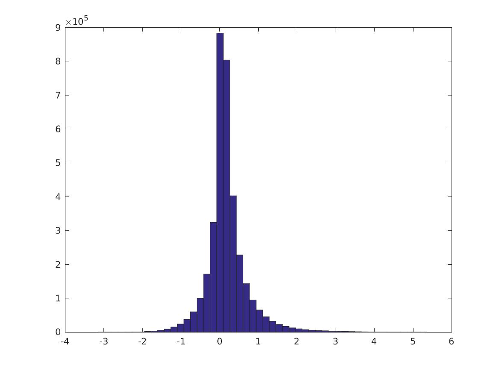
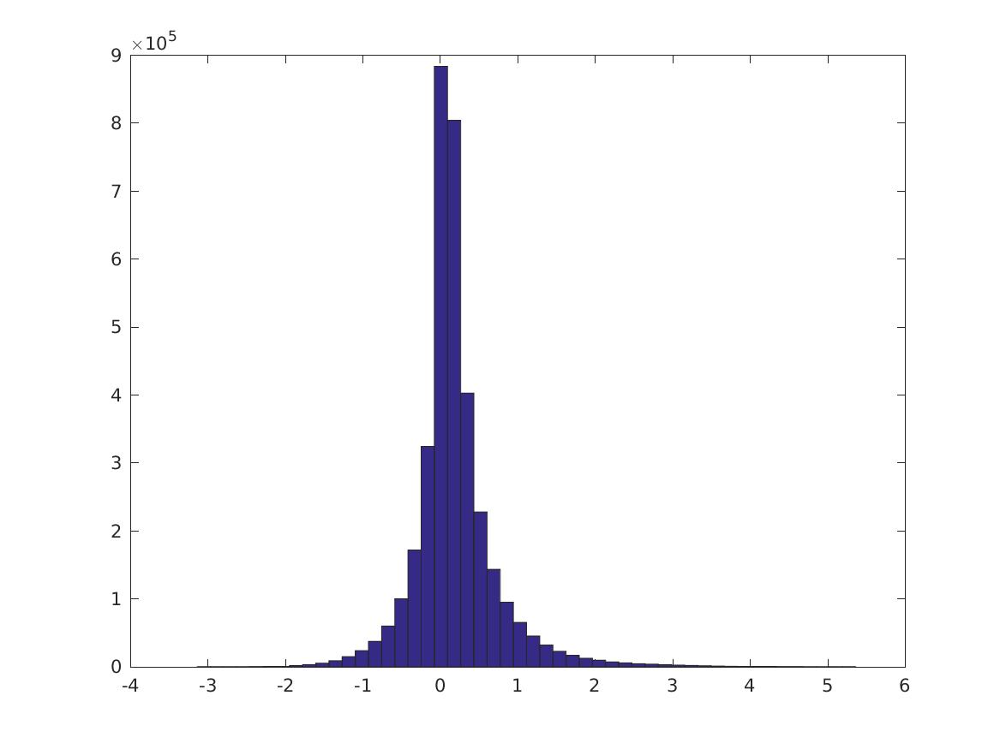

PMI for images
Posted: 2016-08-01 , Modified: 2016-08-01
Tags: PMI, neural nets, vision
Posted: 2016-08-01 , Modified: 2016-08-01
Tags: PMI, neural nets, vision
Experiments:
mnist_testing.m: Prep data.svd_testing.m: How does reducing the number of features through SVD affect classification accuracy?pairwise_mi.m: Tests related to mutual informationmi.mMI_GG.mrsvd.m nlayers: 2
layer: {2x1 cell}
type_zerolayer: 2
ndesc: 7200
numlayer: 1
centering: 0
median_contrast_normalization: 0
npatch: 5
subsampling: 2
smap: 50
type_zerolayer: 2
sigma: 0.7459
Z: [25x50 double]
w: [50x1 double]In pairwise_mi.m there’s no normalization by scaling (\(-2\log\pat{scale}\)).
https://en.wikipedia.org/wiki/Conditional_mutual_information
The right PMI measure to use here is \[ \ln \pf{\an{v,w}}{\an{v,\one}\an{w,\one}}. \] Because if we assume the activations are like \((e^{\chi,v})_\chi\), then we still get that the expected dot product of these is \(\int e^{\an{\chi,v}}e^{\an{\chi,w}}\,d\chi\propto \exp\pa{\fc{\ve{v+w}^2}{2}}\).
(Compare to purely random.)
Understand loss function for PMI.
Qs
nrm=mean(sqrt(sum(compTr.^2)))?Run experiments.
nohup nice -19 matlab -nodisplay -nodesktop -nojvm -nosplash < run_experiments2.m > output_2016-08-07.txt 2>&1 &%Get psiTr
pmi_experiments('logs/model_mnist_5_2_0_2_2_0_50_200_0_1.000000e-01_1.000000e-01_1.000000e-01_2.mat');
%get percentiles for each feature
pc= get_percentiles(psiTr);
save('pc_1.mat','pc','-v7.3');
%calculate PMI after normalizing and deleting zero rows.
[P, inds] = calculate_pmi(psiTr); %inds give the indices that are kept (indices of nonzero rows)
%exploratory analysis
%pmi_experiments(P);
[all_pmi_pairs, positions, dists] = pmi_experiments2(P, inds');
save('all_pmi_pairs_1.mat','all_pmi_pairs');
save('positions_1.mat','positions');
save('dists_1.mat','dists');
%cpmi matrices
Ps = calculate_cpmi(psiTr, Ytr, '1');
cpmi_experiments('P_1');Over all pairs of features \(i,j\), this is the distribution of \(PMI(v_i,v_j)\):

(Question: is this what you would expect if the distribution were “random” or are the tails different than what we would expect?)
Is there a correlation between PMI and distance between features? (Distance ranges from \(0\) to \(5\sqrt 2\).) It seems not.

Conditioned on the digit being a specific value, how does the PMI distribution look? Still about the same… These are digits 0-4.


NOT CORRECT—FIX
See script pmi_thresholded.m.
Remove all features that do not have PMI \(>0.5\) with another feature. Now do the same thing.
This is the distribution of \(PMI(v_i,v_j)\):

These are digits 0-4.
 
 


Percentiles of the distributions (\(i\)th row is 0, 10, 20, … 100% for the CPMI’s of digit \(i\), last row is PMI over all digits).
FIXED VERSION:
Columns 1 through 7
-0.9746 -0.0588 -0.0140 0.0112 0.0306 0.0488 0.0681
-3.1365 -0.3102 -0.0940 0.0050 0.0609 0.1144 0.1812
-0.9300 -0.0626 -0.0130 0.0134 0.0333 0.0526 0.0740
-0.7660 -0.0462 -0.0022 0.0210 0.0403 0.0602 0.0835
-2.0740 -0.0565 -0.0071 0.0188 0.0397 0.0611 0.0855
-0.8674 -0.0628 -0.0077 0.0229 0.0471 0.0705 0.0966
-2.3770 -0.0457 -0.0007 0.0228 0.0428 0.0639 0.0886
-2.4824 -0.0928 -0.0235 0.0121 0.0379 0.0633 0.0925
-0.9435 -0.0521 -0.0066 0.0161 0.0347 0.0545 0.0785
-2.1549 -0.0505 -0.0020 0.0231 0.0446 0.0679 0.0961
-0.8693 -0.0515 0.0008 0.0344 0.0640 0.0949 0.1309
Columns 8 through 11
0.0910 0.1215 0.1730 1.5181
0.2772 0.4314 0.7470 5.3609
0.1007 0.1393 0.2117 1.5297
0.1141 0.1604 0.2521 1.6011
0.1169 0.1635 0.2537 2.2486
0.1293 0.1773 0.2773 2.0363
0.1215 0.1727 0.2771 2.5443
0.1305 0.1882 0.3019 2.9006
0.1111 0.1639 0.2788 2.1102
0.1344 0.1957 0.3210 2.7701
0.1761 0.2406 0.3557 1.7908Old.
Columns 1 through 7
-0.9616 -0.1685 -0.0555 0.0401 0.1258 0.1950 0.2585
-3.2378 -0.6829 -0.0994 0.3855 0.7839 1.0961 1.3635
-1.2622 -0.3800 -0.2319 -0.1117 -0.0036 0.1409 0.2555
-1.3727 -0.3347 -0.2142 -0.1051 0.0533 0.2658 0.3954
-2.5869 -0.1480 0.0317 0.1713 0.2813 0.3691 0.4565
-1.4005 -0.2656 -0.1514 -0.0531 0.0900 0.2485 0.4508
-2.6503 -0.1233 0.0691 0.2188 0.3307 0.4232 0.5139
-3.1251 -0.3539 -0.1900 -0.0547 0.1221 0.2726 0.3958
-1.2634 -0.3409 -0.2120 -0.0706 0.1871 0.3949 0.5332
-2.7278 -0.1644 0.0981 0.2801 0.4125 0.5166 0.6141
-1.1984 -0.1471 0.0025 0.1446 0.3121 0.4443 0.5467
Columns 8 through 11
0.3308 0.4302 0.6038 2.9385
1.6755 2.1273 2.8247 5.9331
0.3485 0.4551 0.6268 1.9094
0.4947 0.5965 0.7375 1.8452
0.5586 0.6958 0.9168 3.0054
0.6305 0.7970 1.0120 3.0518
0.6179 0.7556 1.0101 3.7582
0.5130 0.6473 0.8646 3.2767
0.6707 0.8260 1.0359 2.7204
0.7177 0.8460 1.0425 3.4744
0.6477 0.7640 0.9322 2.6897Run qsub svd_svm.cmd which runs svd_testing2.m, or sbatch slurm_svd.cmd. The results are saved in accs_1.mat.
Results:
| Dimension | Last | Best |
|---|---|---|
| 500 | 99.26 | 99.44 |
| 100 | 97.5 | 98.82 |
| 50 | 96.84 | 96.84 |
Do weighted SVD and then train a SVM. Note this does worse than just SVD! Why?
| Dimension | Last | Best |
|---|---|---|
| 50 | 95.44 | 96.8 |
psiTr_1.mat, psiTe_1.mat etc. are the feature vectors for the training/test sets and the different architectures. The architectures are
test_ckn([5 2 0],[2 2 0],[50 200 0],2,'mnist'); (7200, 0.57%)test_ckn([1 3 0],[2 2 0],[12 50 0],3,'mnist'); (1800, 0.63%)test_ckn([1 3 0],[2 4 0],[12 400 0],3,'mnist'); (3600, 0.41%)